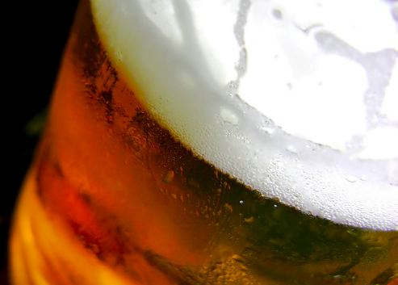

Hangover Gene
Shedding light on alcohol tolerance
Ryan Chao
Fall 2005

Can’t handle your liquor? New research indicates that genetics may
affect alcohol tolerance. Geneticists have discovered a gene that may
have a profound relationship to the amount of alcohol a person can
consume. Aptly named hangover, this gene seems to control the
development of alcohol tolerance in flies. Ulrike Heberlein, PhD, at
the University of California, San Francisco, and Henrike Scholz, PhD,
from the University of Würzburg in Germany, have been conducting
experiments with Drosophila fruit flies that were exposed to ethanol
vapors. Research on these flies suggests that the same gene pathway is
conserved in humans as well. This new finding will shed light on
alcohol tolerance in humans and might even allow geneticists to
discover a method to combat alcoholism.
The effect of alcohol on these flies is similar to
its effect on humans: it results in a lack of coordination, postural
control, and drowsiness. These effects were assessed by an
inebriometer, which quantitatively measures postural control in flies.
The geneticists took a group of Drosophila fruit flies with the
functional form of the hangover gene and compared initial inebriation
times with subsequent inebriation times. Upon first exposure, it took
an average of 20 minutes for the flies to lose postural control. Four
hours later, the same flies were exposed to ethanol vapors. This time,
the flies required 28 minutes to become fully inebriated, because they
had developed a tolerance to alcohol and thus needed more time to reach
the same level of intoxication. Further tests with flies possessing the
defective hangover gene demonstrated that they also required only 20
minutes to become inebriated, having never built up a tolerance.
Intriguingly, Heberlein and Scholz found the
hangover gene to also control the stress response in fruit flies. To
test this theory, they ex- posed flies to stress by heating them to
37°C for 30 minutes prior to exposure to ethanol vapors and measured
the length of time required for inebriation. Results showed a clear
link between the stress response and alcohol tolerance in flies. It
took an average of 29.5 minutes for flies to inebriate on second
exposure. This effect was, of course, not detected in flies without a
functional hangover gene. These results are especially surprising,
since increased tolerance could be the result of stress even on
occasions in which there has been no prior exposure to alcohol.
It would not be surprising if a similar genetic
relationship between stress and alcohol tolerance were to be found in
humans. Results from previous studies suggest that the gene has been
conserved as a result of evolution and that humans have a similar
genetic profile to Drosophila. Further proof is evident in human
behavior, as humans often turn to alcohol when they are either stressed
or depressed. In addition, prior studies have demonstrated that humans
often require a higher degree of alcohol to feel inebriated after being
exposed to environmental stress.
The discovery of the hangover gene in flies helps
explain this process and may even aid in the discovery of a risk
detection method for those with an overexpressed hangover gene. If
further research reveals the chemical pathway that the gene codes for,
a cure for alcoholism may soon be on its way.